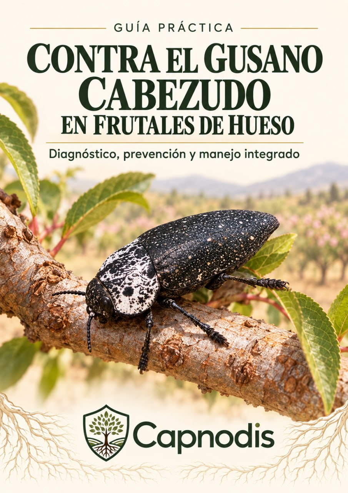
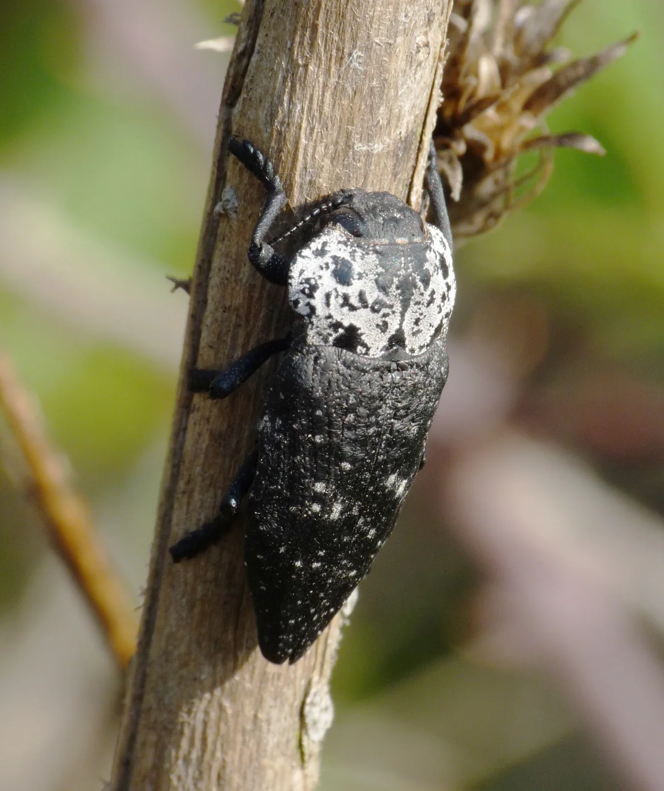
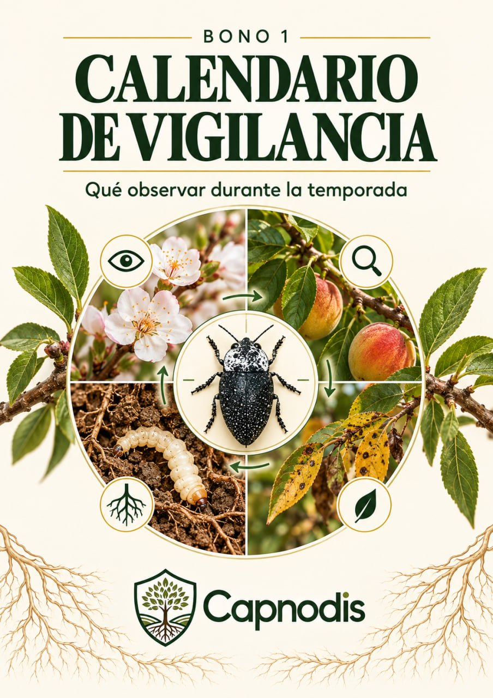
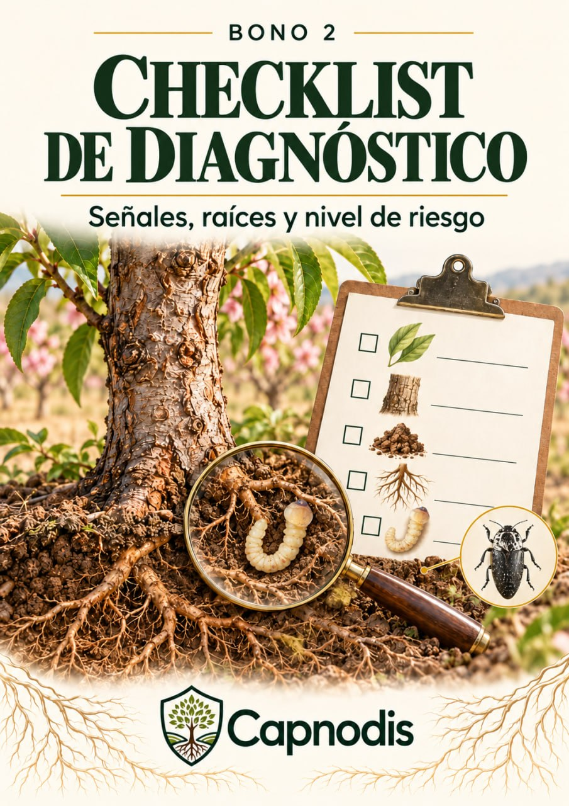
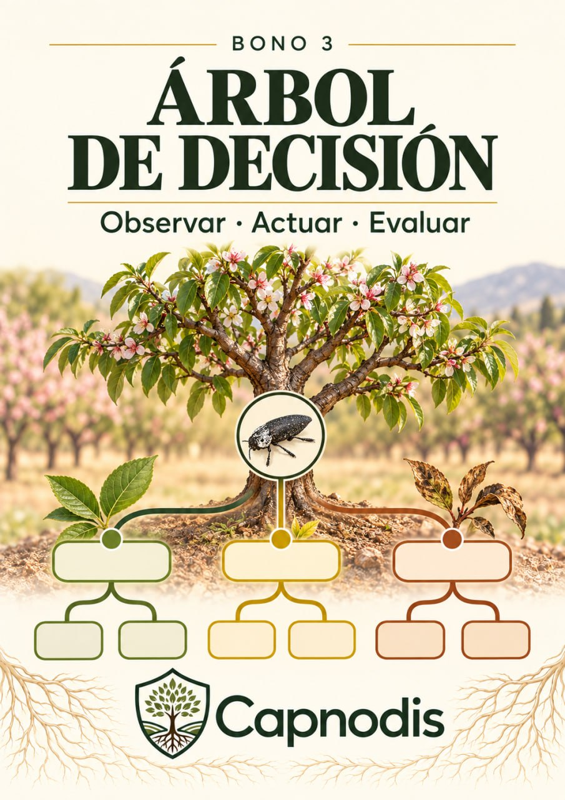
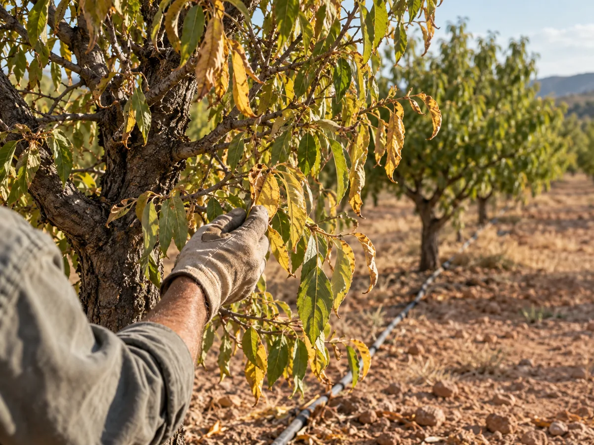
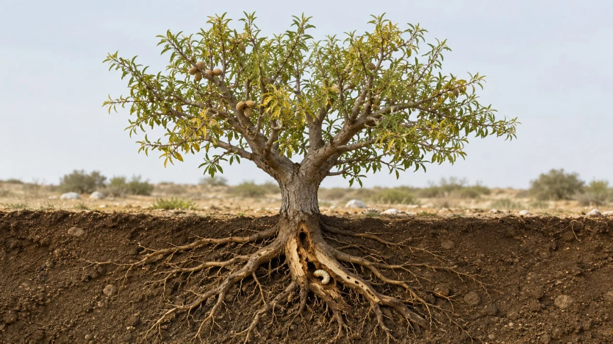
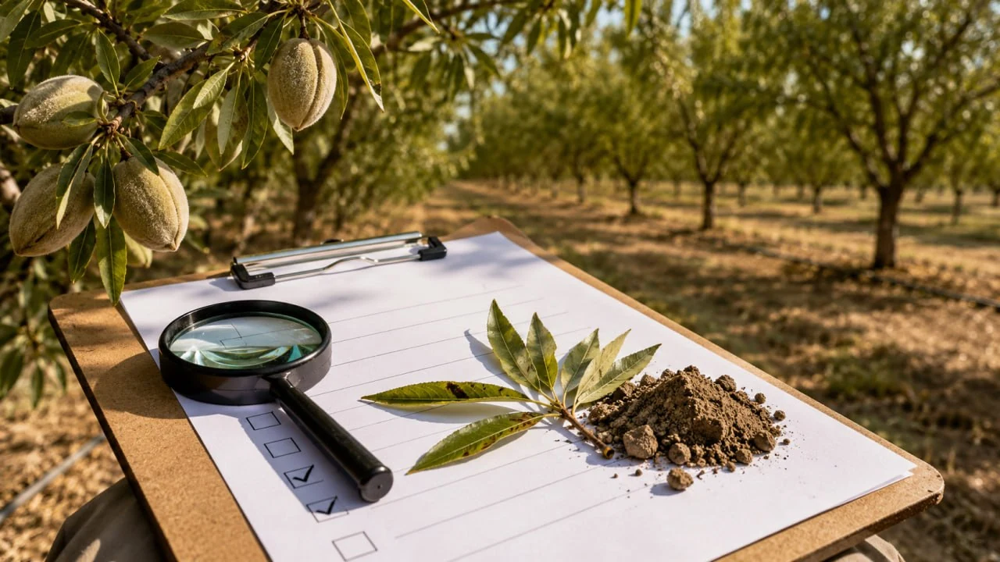

Guía completa en PDF
Diagnóstico, ciclo de vida, prevención y manejo integrado para 5 cultivos de hueso.
Aviso para productores de frutales de hueso
El gusano cabezudo (Capnodis tenebrionis) daña raíces y cuello del árbol antes de que veas nada en la copa. Cuando el amarilleo es visible, la decisión ya no es "prevenir" — es "actuar o retirar". Esta guía te ayuda a saber en qué punto estás, en almendro, melocotonero, albaricoquero, ciruelo o cerezo.
La guía que te da el plan completo para afrontar y resolver el problema del gusano cabezudo — diagnóstico, decisión y manejo paso a paso. Con 3 bonus incluidos.

La solución para ti
Esto no es teoría suelta. Es un plan de acción con pasos claros, construido con fuentes oficiales de sanidad vegetal: diagnostica, decide y actúa sin improvisar y sin perder semanas buscando información dispersa.

Diagnóstico, ciclo de vida, prevención y manejo integrado para 5 cultivos de hueso.

Qué observar y cuándo, durante toda la temporada.

Revisa síntomas, tronco y nivel de riesgo en el campo.

Observar, actuar o retirar: decide según el nivel de daño.
Guía + 3 bonus por 29,90 € 19,90 € · descarga inmediata
Primero parece sequía. Después ya es tarde.
Revisas el riego. Piensas que puede ser falta de nutrición. Vuelves a tratar "por si acaso". Pero si el problema es gusano cabezudo, el daño más peligroso puede llevar meses avanzando bajo tierra, sin importar si tu parcela es de almendro, melocotonero, albaricoquero, ciruelo o cerezo.
Por eso esta guía no empieza por productos sueltos. Empieza por ayudarte a entender qué está pasando y qué decisiones tomar según el nivel de daño, en tu cultivo concreto.
Ver la oferta
Por qué la mayoría reacciona tarde

Cómo actúa el gusano cabezudo
La clave no es reaccionar tarde, sino entender el ciclo y actuar con un plan. Este es el flujo que la guía te ayuda a ordenar, con las diferencias que existen entre regiones y cultivos:
El adulto pone los huevos junto a la base — el punto de entrada de todo el problema.
Ahí es donde ocurre el daño real, meses antes de verse en la copa.
El secano suele agravar el cuadro; el momento exacto cambia según tu zona.
La guía te da el criterio para tomar esta decisión antes de perder más tiempo.
Dentro de la guía principal
No es otro artículo suelto ni una guía pensada solo para un cultivo. Está organizada para almendro, melocotonero, albaricoquero, ciruelo y cerezo, con las diferencias regionales marcadas donde existen.
Señales visibles y daño oculto en raíces y cuello, comunes a los cinco cultivos.
Cuándo aparecen adultos, puesta y por qué el momento importa en tu región.
Secano frente a regadío, plantación joven o vieja, y por qué el riego por goteo exige atención.
Qué observar, y el umbral práctico usado en algunas regiones de secano.
Manejo del riego, recogida manual, saneamiento y barreras físicas.
Por qué ningún método aislado basta, y cómo combinarlos con criterio.
Qué cambia entre almendro, melocotonero, albaricoquero, ciruelo y cerezo — y qué no.
Sin promesas vacías: te decimos también qué no tiene respaldo suficiente todavía.
3 bonus incluidos con la guía
Qué observar y qué decisiones revisar durante la temporada, con las ventanas de actividad que cambian según región.
Una lista sencilla para revisar síntomas, señales alrededor del tronco y nivel de riesgo, válida para los cinco cultivos.
Esquema práctico para saber si conviene observar, actuar o retirar un árbol muy afectado.
Por qué necesitas esta guía
Guía completa + 3 bonus de regalo: 29,90 € 19,90 €
Para quién es
Esta guía puede ayudarte si tienes síntomas, sospechas o quieres prevenir daños en una plantación de almendro, melocotonero, nectarina, albaricoquero, ciruelo o cerezo.

Sin promesas falsas
Esta guía no promete eliminar el 100% de la plaga ni garantiza salvar árboles que ya están muy afectados. Tampoco te dirá que un producto concreto funciona igual en las cinco especies — porque la evidencia disponible no siempre lo respalda igual para todas.
El objetivo es ayudarte a entender el ciclo, detectar señales, ordenar medidas y evitar decisiones improvisadas, con la honestidad de decirte también dónde termina lo que sabemos.
Descarga inmediata
Recibirás la guía en PDF por correo nada más pagar, lista para consultar desde el móvil, el ordenador o imprimir si lo necesitas.
Preguntas frecuentes
Porque esa información suele estar repartida en foros, artículos sueltos y fichas técnicas dispersas, sin criterio claro para tu cultivo concreto. Esta guía la organiza en un solo sitio, en español, filtrada con fuentes oficiales y citando de dónde sale cada afirmación — y te dice también qué no está probado, algo que rara vez se ve en contenido gratuito.
Es una guía digital en PDF. Podrás leerla desde el móvil, ordenador o imprimir las partes que necesites.
Cubre almendro, melocotonero, nectarina, albaricoquero, ciruelo y cerezo/guindo. El diagnóstico, la biología general y las medidas preventivas son comunes a los cinco; donde la evidencia muestra diferencias reales entre cultivos, la guía lo señala en vez de igualar todo.
La nectarina es la misma especie que el melocotón (Prunus persica), así que la tratamos con el mismo criterio. El guindo es una especie muy cercana al cerezo dulce; lo indicamos así, como una extensión razonada y no como un hallazgo específico para el guindo.
Un calendario de vigilancia, un checklist de diagnóstico en campo y un árbol de decisión según el nivel de daño — pensados para usarse con cualquiera de los cinco cultivos.
Sí, y de hecho el riesgo suele ser mayor en secano según varias fuentes oficiales regionales. Algunas medidas, como el manejo de humedad, son más limitadas sin riego. La guía explica cuándo tienen sentido y cuándo no.
No es una lista comercial de productos. La guía explica criterios para tomar decisiones y qué preguntar antes de comprar o aplicar una solución, siempre remitiendo a la normativa vigente para cualquier producto fitosanitario.
No podemos prometer eso. Si el daño interno es avanzado, puede que el árbol no sea recuperable. La guía incluye criterios para valorar cuándo intentar actuar y cuándo puede ser mejor retirar el árbol.
Distinguimos explícitamente entre lo que la evidencia respalda de forma general y lo que solo se ha documentado en una región o cultivo concreto. Cuando algo no está suficientemente probado — por ejemplo, la eficacia de una medida en campo — te lo decimos, en vez de presentarlo como un hecho establecido.
Sí, como base principal: fuentes oficiales de sanidad vegetal de varias comunidades autónomas, junto con estudios científicos internacionales sobre manejo integrado, biología y control biológico. Cada afirmación relevante indica su fuente.
No. Es una guía informativa y práctica. Para decisiones fitosanitarias concretas, tratamientos y normativa vigente, consulta siempre con un técnico cualificado.
Al instante. En cuanto se confirma el pago recibirás un correo con el enlace de descarga de la guía y los 3 bonus, normalmente en menos de 2 minutos. Si no ves el correo, revisa la carpeta de spam o escríbenos y lo resolvemos el mismo día.
Actúa antes de perder más árboles
El plan completo para resolver el problema del gusano cabezudo en tus frutales de hueso, con 3 bonus incluidos: calendario de vigilancia, checklist de diagnóstico y árbol de decisión.
Quiero la guía + 3 bonus · 19,90 €